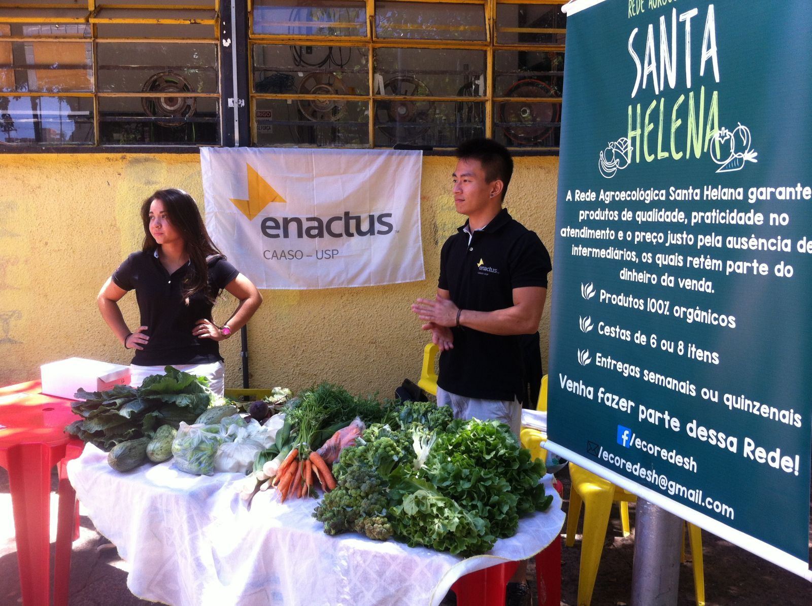
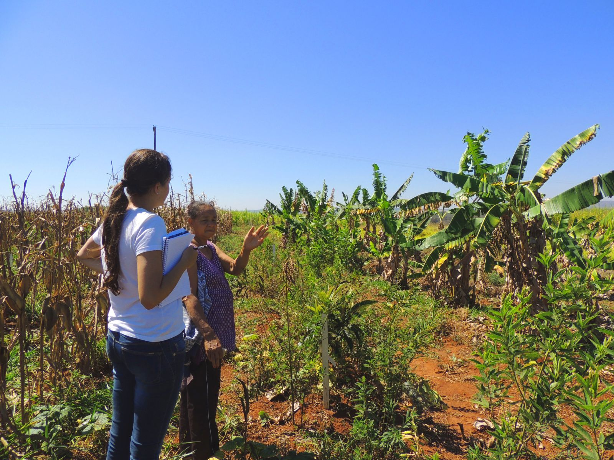
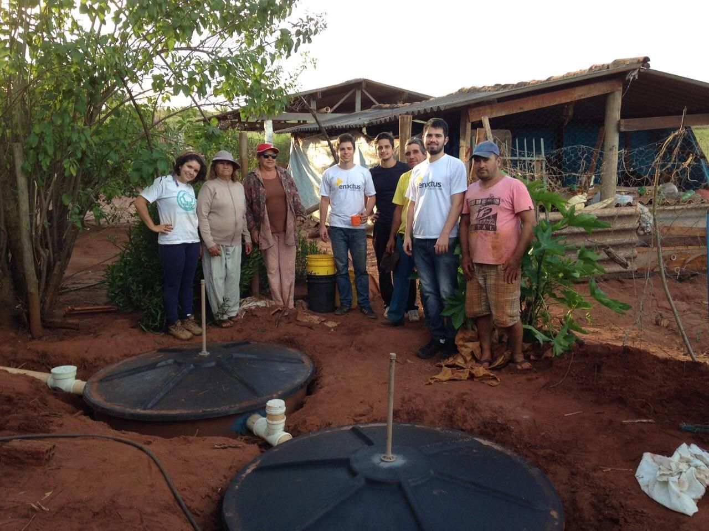
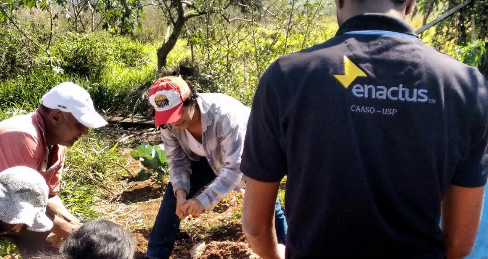
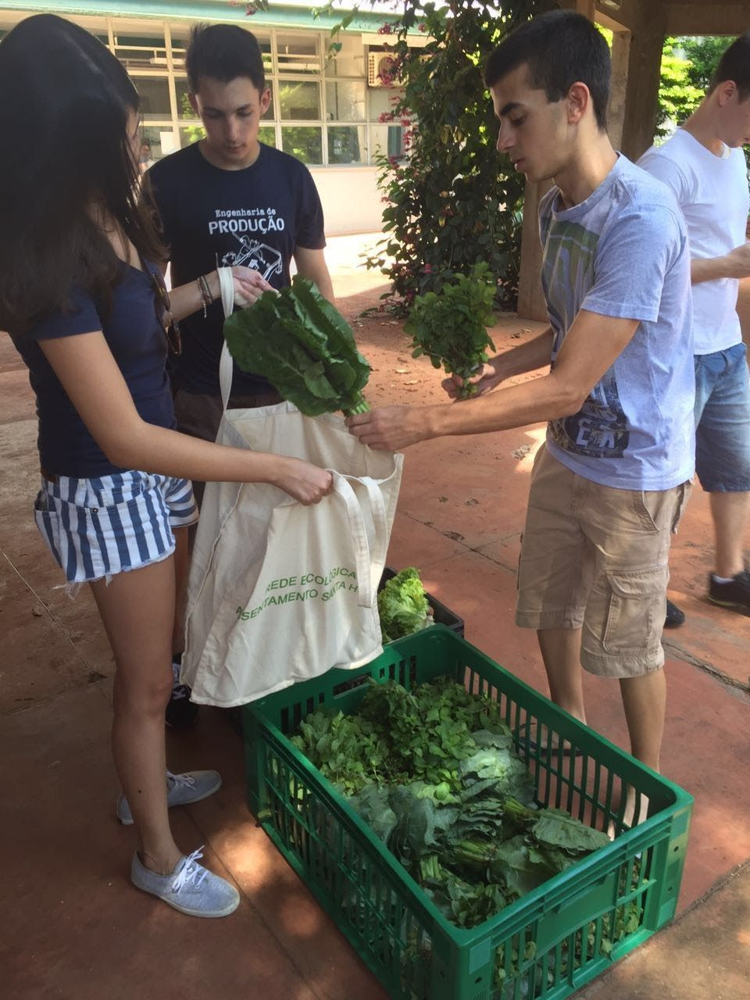

Geração Helena
O primeiro projeto do time: a Rede Agroecológica que levou os orgânicos do Assentamento Santa Helena ao centro de São Carlos.

- Comunidade
- Assentamento Santa Helena
- Famílias
- 14
- Nacional Enactus
- 3º lugar em 2015
- Prêmio Ford
- US$ 5 mil
A comunidade
São Carlos vai muito além do centro.
Nosso time só entendeu que São Carlos ia muito além do centro quando conheceu o Assentamento Santa Helena: 14 famílias divididas em lotes no que parecia uma grande fazenda, a bons quilômetros da região central.
A maioria se dedicava ao cultivo orgânico, mas o isolamento geográfico tornava o escoamento muito difícil e trazia problemas de moradia, saneamento e saúde. Ainda assim, nada tirava o sorriso da Terezinha, do Seu Sebastião, da Lindamira e de outros moradores com quem criamos vínculos inesquecíveis.

Primeiros passos
Água de qualidade para o assentamento.
Depois de meses de reconhecimento da comunidade, instalamos cloradores em quase todas as moradias, melhorando a qualidade da água consumida, e doamos caixas d’água para o armazenamento adequado.
Graças a um prêmio da Ford de 5 mil dólares, compramos uma bomba d’água que resolveu o abastecimento insuficiente: levar água da represa até as casas ficou muito mais fácil.

Rede Agroecológica Santa Helena
Do produtor direto para o consumidor.
Além de mutirões como o Mutirão da Saúde, o maior foco foi a produção orgânica: criamos a Rede Agroecológica Santa Helena, um modelo de negócio que levou os orgânicos do assentamento até as regiões centrais, aproximando produtor e consumidor.
A Rede passou rapidamente a ser a principal fonte de renda de muitas famílias e nos levou ao 3º lugar no Campeonato Nacional Enactus de 2015. O Geração Helena é, sem dúvida, uma referência de impacto positivo, inspiração e mudança.

Galeria




Esse projeto terminou. O impacto continua.
Conheça os projetos ativos do time e veja como acompanhar ou apoiar o que estamos construindo agora.